Gold in every kind of deposit
Almost every deposit type you have studied contains some gold: supergene zones, VHMS, magmatic Ni-Cu, sedimentary Mn-Fe and banded iron formation, porphyry Cu-Au-Mo, IOCG, uranium and REE deposits. Often the gold is what makes the deposit profitable, especially early in its life. A deposit can change from a "copper mine" to a "gold mine" when prices change. The question is whether there is enough gold. slide 2 lecture recording, 12 Oct
Deposits that contain only gold are in three groups: magmatic-hydrothermal (related to porphyries, and epithermal, like Kidston and Lihir), metamorphic (orogenic and intrusion-related, like the Yilgarn, Victoria and Carlin) and sedimentary (placers and paleoplacers, possibly the Witwatersrand). slide 3
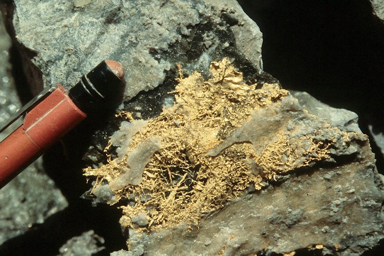
This is gold wire in quartz. What shape are the gold "wires" really made of? What does the pale colour suggest?
Show what I see
- Fine, branching, wire-shaped gold on a quartz vein: crystalline gold, typical of epithermal systems.
- A pale, slightly greenish yellow, not deep yellow.
The wires are actually long, stacked cubes of gold. The colour gives a rough idea of the composition: pale gold contains a lot of silver, and deep yellow gold is purer. Do not expect to see this in real ore: most gold is invisible. lecture recording, 12 Oct
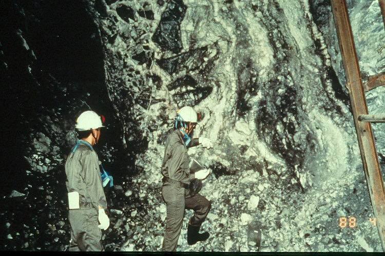
Production, reserves and history
All the gold ever mined, almost 200 000 tonnes, would make a cube about 22 m on each side. People have valued gold for at least 7000 years. At first it came from supergene and river deposits. From 1850, the gold rushes in California, eastern Australia and South Africa caused many people to move there. Chinese miners in the Australian and Californian goldfields were the best at recovering very fine "flour" gold. Since about 1990, technology has made it possible to mine low-grade and invisible gold. slides 4 and 10 lecture recording, 12 Oct
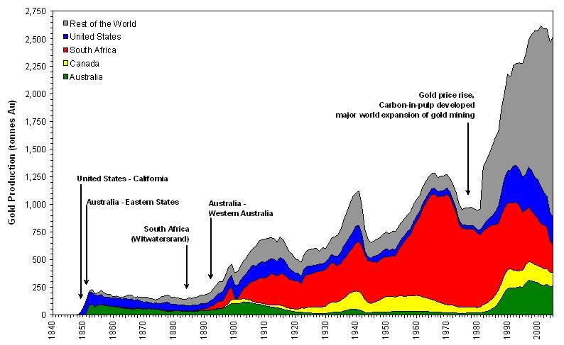
Who mines it, who holds it
Tonnes, USGS figures from slides 6 and 7.
Grades have fallen by more than ten times. Early Australian goldfields had more than 50 g/t, and today mines work down to about 0.5 g/t. Jewellery is still the largest use (43%). Then come bars and coins (29%), purchases by central banks and governments (12%), electronics (7%), ETFs (6%), other industry (2%) and dentistry (1%, about 40 t per year). slide 10 lecture recording, 12 Oct
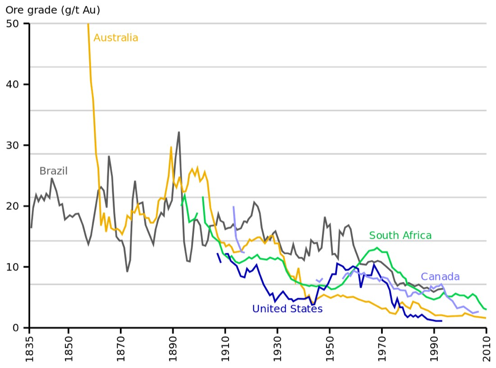
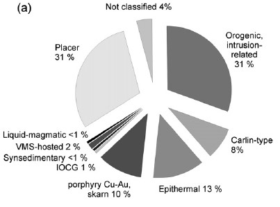
By deposit type, paleoplacers (mainly the Witwatersrand) and orogenic gold have each produced about 31% of all gold. Epithermal deposits produced 13%, porphyry and skarn 10%, Carlin-type 8% (now often grouped with orogenic), VMS about 2% and IOCG about 1% (more since Olympic Dam). In time, gold is concentrated in the Mesoarchean (the Witwatersrand alone) and the Cenozoic (porphyry and epithermal). There is very little in the Mesoproterozoic. slide 11 (Frimmel, 2008) lecture recording, 12 Oct
Gold economics
Gold is priced per troy ounce. One tonne contains 32 150.7 ounces, so one ounce is about 31.1 g (the slide rounds it to about 33 g). At US$2400 an ounce in 2024, one tonne was worth about US$77 million. At about US$4000 in 2025, a million ounces is worth US$4 billion. Australia produced 310 t in 2023, about 9.97 million ounces. This was worth roughly A$31 billion at 2023 prices, and A$61 billion at 2025 prices. slides 8 and 9
Is it a mine?
Contained ounces = tonnes × grade ÷ 31.1 g. The values are the total value of the metal in the ground, before any costs. A$ at US$0.65, as on slide 9.
This is why companies look for large deposits. A deposit of a million ounces is worth billions in the ground, but most large companies would not be interested. They want 10 million ounces or more: enough tonnage to pay for the infrastructure and to run for decades. A small, high-grade orogenic deposit of 50 000 oz may simply be ignored. lecture recording, 12 Oct
Gold in ordinary rocks
Igneous, sedimentary and metamorphic rocks without mineralisation contain only 0.05 to 20 ppb gold. Ore needs about 0.5 g/t in an open cut, and 6 to 8 g/t underground. Since 1 g/t is 1000 ppb, even low-grade open-cut ore has gold concentrated tens to thousands of times above background. Something must remove the gold from the rock, carry it, and deposit it in one place. slide 12
- Igneous rocks: gold follows sulphur. Magmas that are not saturated in sulphur keep more gold. Mid-ocean ridge basalts are more reduced. They become saturated in sulphide early, so they contain less gold than ocean-island basalts and arc basalts.
- Sedimentary rocks: gold increases with diagenetic sulphide and organic matter, so reduced sediments contain more gold.
- Metamorphic rocks: gold decreases as metamorphic grade increases. Rocks in amphibolite facies contain 50 to 80% less gold than their original rocks. Metamorphic fluid has removed the gold, and orogenic deposits collect exactly this gold (Lecture 13).
slide 12; lecture recording, 12 Oct
Fluids in the crust
Five kinds of water move through the crust, and they mix. slide 17
| Fluid | Origin | Character |
|---|---|---|
| Magmatic | From the mantle, or any water taken into a magma (such as subducted, seawater-altered crust) | Hottest and most saline |
| Seawater | 70% of the surface, 98% of free water | Well mixed, 3.5 wt% dissolved salts |
| Meteoric | The hydrological cycle: rain, groundwater, lakes, ice | Dilute, oxygenated |
| Connate | Seawater or meteoric water trapped in sediment pores, modified by burial (75% expelled by 300 m) | Can be very saline |
| Metamorphic | Dehydration and decarbonation of minerals above about 200 °C | Low salinity, with CO₂, CH₄ and sulphur species |
Temperature changes everything. Cold seawater and rain contain very little metal. But seawater heated to 100 to 300 °C in a black smoker, or meteoric water heated to 300 °C in a geothermal field, contains much more. Geothermal water at 300 °C contains 780 ppm dissolved silica, compared with 1.2 ppm in rain. slide 18 (Krauskopf and Bird, 1995; Scott, 1997)
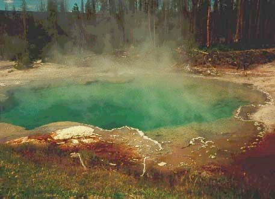
What is this pool the surface sign of? What might the orange crust around it contain?
Show what I see
- A steaming, clear turquoise pool: hot water rich in silica.
- Bright orange to red-brown crusts on the edge.
This is the top of an active epithermal (geothermal) system. The orange material is arsenic and antimony sulphide. In some New Zealand pools, these crusts contain hundreds of grams per tonne of gold. The Broadlands geothermal field deposits kilograms of gold every year inside its pipes. slide 16 lecture recording, 12 Oct
Which fluid?0 / 5
Carrying gold
Gold dissolves by forming complexes. In oxidising, acidic conditions, and at higher temperatures, it travels as a . In almost neutral, reducing conditions, and at lower temperatures, it travels as a . Organic complexes may also be important, but they are not well understood. slide 13 lecture recording, 12 Oct
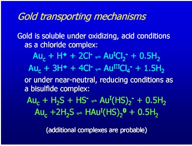
The key difference from base metals: gold stays quite soluble at every temperature. It changes from bisulphide at low temperature to chloride at high temperature. Zinc and copper need high temperatures (above about 250 °C). Gold also dissolves in both acidic and alkaline fluid, but Cu and Zn do not dissolve in alkaline fluid. This is why gold deposits form from the epithermal range down to the deep mesothermal range, and why gold is found in so many settings. In high-sulphidation epithermal systems, gold travels as chloride at low pH. In low-sulphidation systems, it travels as bisulphide at higher pH (Lecture 14). slide 14 slide notes lecture recording, 12 Oct
How does the gold travel?
Simplified, based on the trends on slide 14 and the slide notes. The bar lengths are relative, not real solubilities.
Dropping gold
Gold is deposited when its complex becomes unstable, and this happens when the fluid changes. The main ways are: boiling (liquid changes to vapour as the pressure drops near the surface); deeper down, effervescence, where an H₂O-CO₂ fluid separates into two fluids; mixing with groundwater that contains oxygen, bicarbonate water or low-pH water; a pressure drop; reaction with wall rock, which neutralises or oxidises the fluid; and fast cooling. Pressure alone is not very important, except through boiling and effervescence. slides 22 and 23 lecture recording, 12 Oct
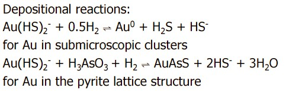
Mixing is very important in epithermal systems. Fluid with gold rises from depth and meets meteoric water with oxygen coming down from the surface. The change in oxygen fugacity makes the complex unstable. Manganese carbonate helps you find the ore here, because the manganese comes down with the meteoric water. In oxidised systems, gold occurs with hematite and pyrite. In reduced systems, it occurs with magnetite. lecture recording, 12 Oct
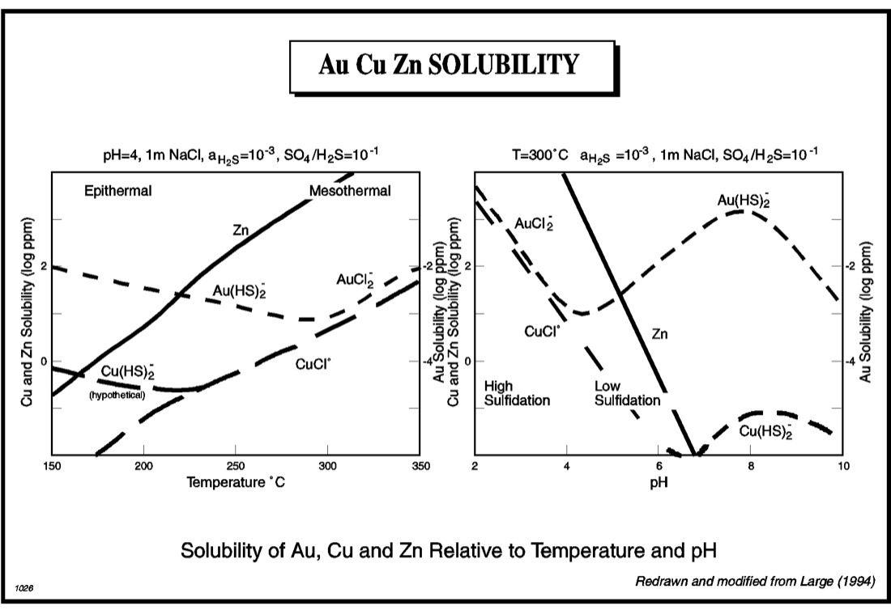
What dropped the gold?0 / 5
- Transport: oxidising, acid, hotter → AuCl₂⁻; near-neutral, reducing, cooler → Au(HS)₂⁻.
- Deposition: boiling or effervescence, fluid mixing, pressure drop, wall-rock reaction, rapid cooling.
- Gold is soluble across all temperatures; Cu and Zn need high temperature.
Settings, depths and alteration
What makes fluid move through the crust? Gravity (hydraulic head, as in sandstone uranium deposits), mountain building and compression (MVT), heat (VHMS), and fault movement. Along active faults, fluid moves by . Each earthquake opens the fault, and fluid rushes up it. Then the fault seals, and pressure builds again, from hydrostatic towards lithostatic. This is the pump at the top of the page (Sibson and others, 1988). When it repeats, it builds en echelon vein arrays, which are typical of orogenic gold. In shallow epithermal systems, the pressure changes are smaller. slides 19 and 20 lecture recording, 12 Oct
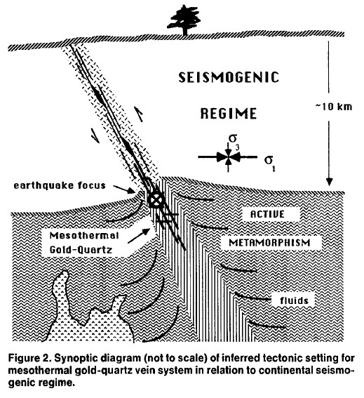
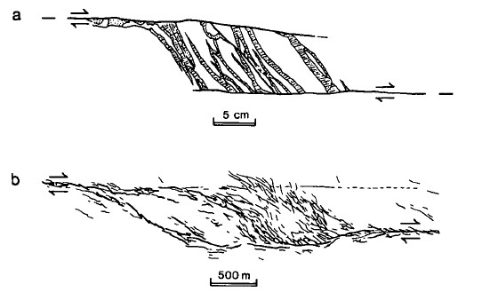
Gold deposits match the stages of an accretionary orogen. In the constructional stage (arcs), porphyry Cu-Au, epithermal and skarn deposits form. In the orogenic stage, VMS, orogenic gold and placers form. In the late to post-orogenic stage, Carlin-type deposits and some porphyries form. Depth also separates them. Epithermal deposits form from the surface to about 2 km. Porphyries form a few kilometres down (to about 5 km). Orogenic gold forms deeper. It changes from epizonal Hg-Sb deposits, through mesozonal Au-As-Te, to hypozonal Au-As-W deposits towards 20 km. slides 25 and 26 (Bierlein et al., 2009; Groves et al., 1998)
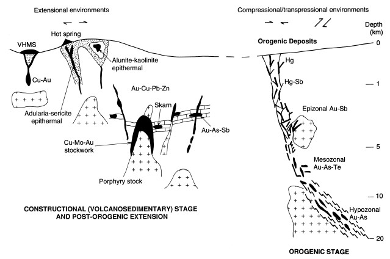
| Style | Setting | T (°C) | Depth | Alteration |
|---|---|---|---|---|
| Orogenic | Compressional, deformed metamorphic terrains | 200 to 700 | 2 to 20 km | Carbonation, sericitisation, sulphidation |
| Epithermal | Arcs and many others | 100 to 300 | surface to 2 km | Adularia-sericite-quartz (low sulphidation); quartz-alunite-kaolinite (high sulphidation) |
| Alkalic epithermal | Post-subduction back arc extension | <300 | very shallow | Carbonate, K metasomatism; telluride-rich |
| Carlin-type | Back arc extension, post-orogenic | 200 to 300 | 2 to 3 km | Intense silicification, argillic; very fine gold |
| Porphyry | Arcs | high | deeper | Biotite, K-feldspar; saline fluids; Ag-poor |
slide 27; lecture recording, 12 Oct
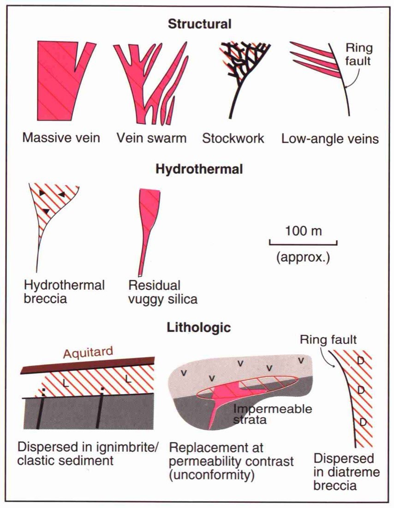
Alteration tells you the temperature and pH. Alunite always means low pH (and with andalusite, high temperature). Adularia means almost neutral pH. Sericite forms at higher temperatures than clays. slide 24 (Corbett and Leach)
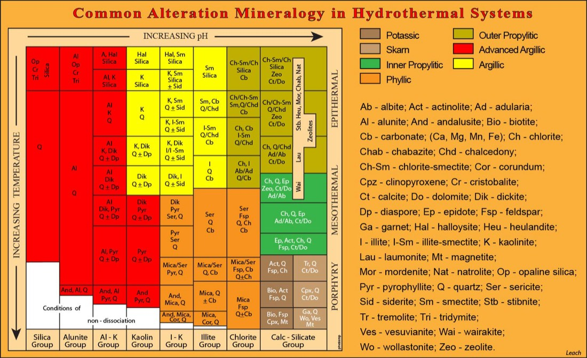
Place the deposit0 / 5
Gold minerals and the Hera mine
Gold almost always contains silver. Gold and silver can mix in any proportion (a complete solid solution). "Electrum" is a mining term for Au75Ag25 to Au25Ag75. The International Mineralogical Association uses a 50:50 rule: more than 50% Au is gold, and less than 50% is silver. Gold also forms alloys with Cu (auricupride Cu₃Au, tetra-auricupride AuCu), Sb (aurostibite AuSb₂, quite common in orogenic deposits) and Bi (maldonite Au₂Bi, named after Maldon in Victoria). Many orogenic and epithermal deposits contain gold : calaverite AuTe₂, petzite Ag₃AuTe₂, sylvanite AuAgTe₄, krennerite and rarer ones, for example at Kalgoorlie, Vatukoula and Cripple Creek. slides 30 to 32 lecture recording, 12 Oct
The composition affects the value. Gold is about US$4000 an ounce and silver about US$44, so a grain that is mostly silver is worth much less than one that is almost pure gold. Deposits often have several generations of gold, so the composition can change a lot. slide 33
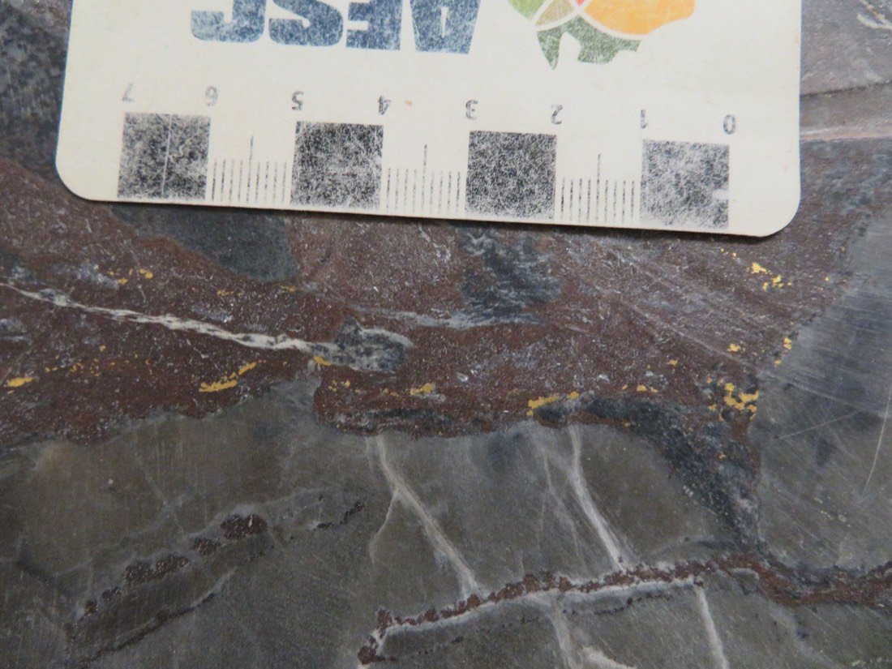
Look along the dark brown band. What are the yellow specks, and how large are they?
Show what I see
- Bright, metallic, butter-yellow specks a few millimetres long. They are concentrated along a dark brown band rich in sulphide, and thin pale veinlets cut the grey host rock.
This is visible gold in polymetallic ore from the Hera mine, central NSW. Gold is the only common mineral that is this yellow, very soft and does not tarnish. Pyrite and chalcopyrite are paler or more brassy, and much harder. Specks like these are rare in most ores, where the gold is invisible. slide 36
Hera is a Devonian Au-Zn-Pb-Ag deposit hosted in turbidites, near Nymagee in central NSW. It is mined underground through a decline, and mining started 220 m below the surface. Its gold grows with sphalerite and galena, sometimes with cuspate-lobate grain shapes (it crystallised together with the sulphides). Rims of Ag-sulphosalts surround it, or rims of aurostibite where antimony came in the fluid after the gold. Microprobe analyses range from about 27% to almost 96% Au. At current prices, this is the difference between less than US$1000 and more than US$4000 per ounce of metal recovered. slides 33 to 39 (Graham et al., 2022) lecture recording, 12 Oct
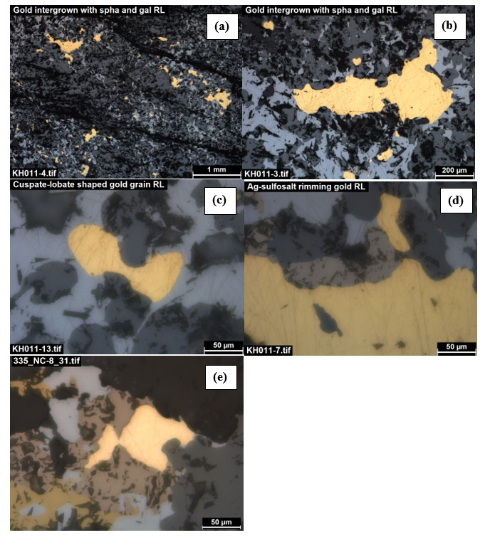
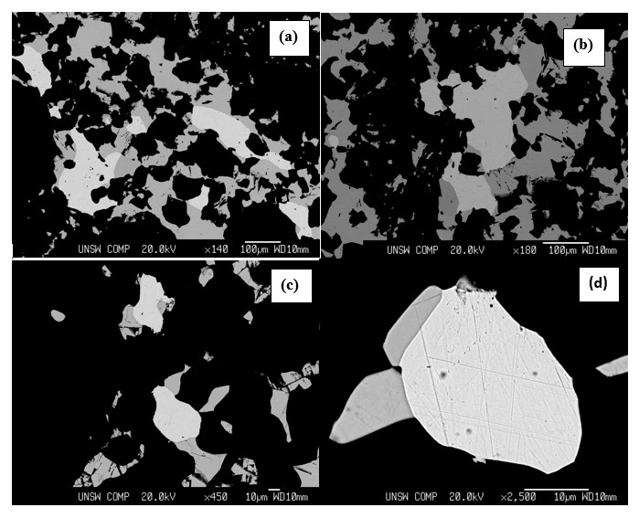
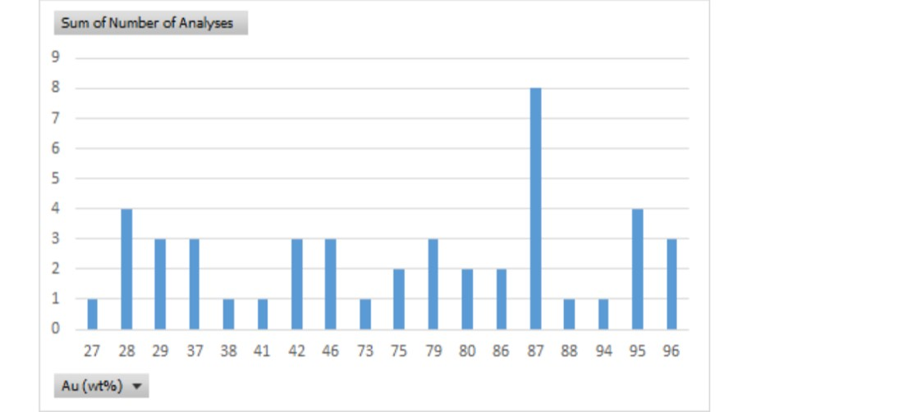
How much is this grain worth?
Uses the prices on slide 33 (Au US$4000, Ag US$44 an ounce), and treats the rest of the grain as silver. The range of 27 to 96% is the Hera microprobe range on slide 39.
- Gold in reflected light: bright yellow, the highest reflectance in the field, soft (scratched, smeared polish) and isotropic. Paler, whiter gold is richer in silver.
- Don’t confuse it with chalcopyrite (darker brassy yellow, harder) or pyrite (pale creamy yellow, hard, often euhedral).
- Watch for tellurides and aurostibite rims next to gold.
Witwatersrand: the paleoplacer giant
Placers are gold concentrated by rivers and waves. are old placers that became rock, and were tilted and buried. So mining them is only profitable if they are very rich. The Witwatersrand Basin, just south of Johannesburg, is the great exception. It has Archean to Mesoproterozoic (3100 to 2200 Ma) conglomerates rich in gold and uranium, and it is the largest concentration of gold in the world. Smaller examples are at Blind River and Elliot Lake in Canada, Jacobina in Brazil, Tarkwa in Ghana, and in the Pilbara. slide 40 lecture recording, 12 Oct
Since it was discovered in 1886, it has produced about 45 000 t of gold, about 40% of all gold ever mined. The average grade was 10 g/t until 1983. South African production was highest in 1970, at 1000 t, and has fallen since then. This is because the remaining reefs are very deep and expensive to reach, although the reserves are still large. You can follow the gold-bearing reefs for tens of kilometres. slide 44 lecture recording, 12 Oct
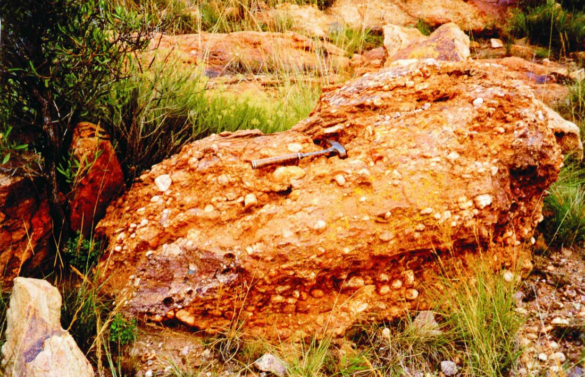
Describe the clasts: shape, sorting and composition. What kind of rock is this, and what deposited it?
Show what I see
- Well-rounded pebbles of fairly similar size, mostly pale vein quartz, packed closely in a finer, iron-stained matrix.
- Faint layering, which suggests bedding.
It is a quartz-pebble conglomerate. Rounded clasts mean long transport by rivers. Almost all the pebbles are of one kind (monomictic: vein quartz, chert, pyrite). This is strange, because the basin is on Archean granite and greenstone, but there are no granite or greenstone clasts. Gold and uraninite are in the matrix. slides 41 to 45
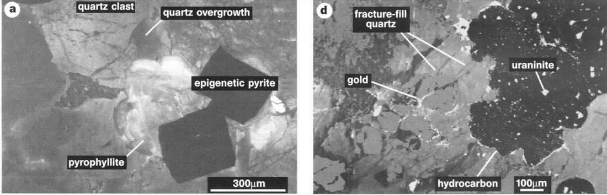
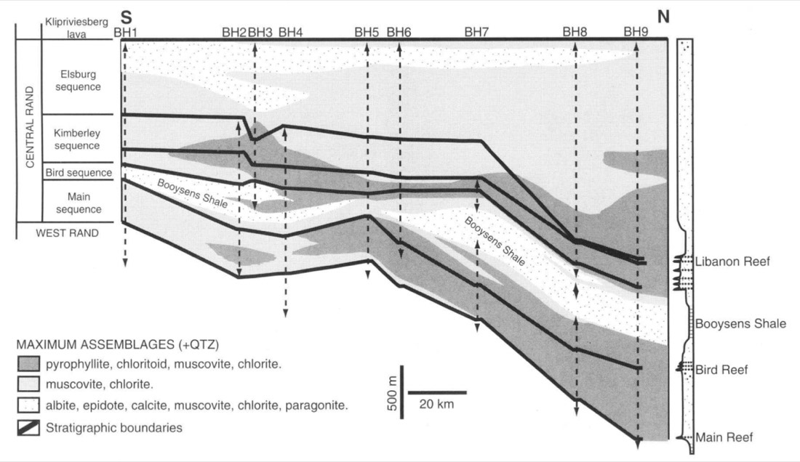
How did the gold get there? There are two main ideas. One is a paleoplacer: gold was eroded from Archean greenstone belts and washed into a lake or shallow sea at the edge of the basin (Frimmel). The other is hydrothermal: fluids brought the gold in later (Phillips). The evidence fits a paleoplacer that was later changed by hydrothermal fluids. The gold and uraninite were transported as grains (detrital). Later they recrystallised and were overgrown during alteration (pyrophyllite, chloritoid, muscovite, chlorite, pyrite), but not much gold was added. Uraninite only survives when the atmosphere has little oxygen, which is a clue about the Archean world. slides 41, 42, 44 and 45 slide notes lecture recording, 12 Oct
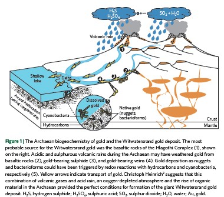
Placer or hydrothermal?0 / 4
Old gold, new gold
Traditional gold mining looked for visible gold and nuggets at high grade. It mined placers in gravels and soils, and then selectively mined orogenic reefs and veins at shallow depth. Placer gold at the "Potato Patch" at Castlemaine came out in pieces as big as potatoes. Low-grade material was left behind. This is why modern companies return to old goldfields to process the material again and explore again. slide 29 lecture recording, 12 Oct
Modern mining looks for fine to microscopic gold at low grade, using bulk-tonnage methods. Examples are epithermal and Carlin-type deposits. Nobody recognised Carlin-type deposits until the late 1970s, when a USGS geologist showed that the fine-grained sediments of the Carlin trend contained gold. Today every style of deposit is mined in bulk, down to very low grades. slide 29 slide notes
- Background 0.05 to 20 ppb; ore ≥0.5 g/t open cut, 6 to 8 g/t underground.
- Five crustal fluids: magmatic, seawater, meteoric, connate, metamorphic.
- Wits: ~45 000 t, ~40% of all gold; conglomerate with gold and uraninite; probably a hydrothermally modified paleoplacer.
- 1 t = 32 150.7 oz; electrum = mining term; IMA 50:50 rule.
Self-test
Answer each question out loud or on paper before you open it. If your answer was right, claim the ounces.
Glossary and flashcards
These are terms that the lecture expects you to know, or only explains briefly. Tap a dotted word in the text to see its meaning.
Flashcards
Where this goes next
Lecture 13 applies the fault-valve pump and the metamorphic fluid from this lecture to the orogenic gold deposits of the Yilgarn and Victoria. Lecture 14 does the same for boiling and mixing in epithermal deposits.